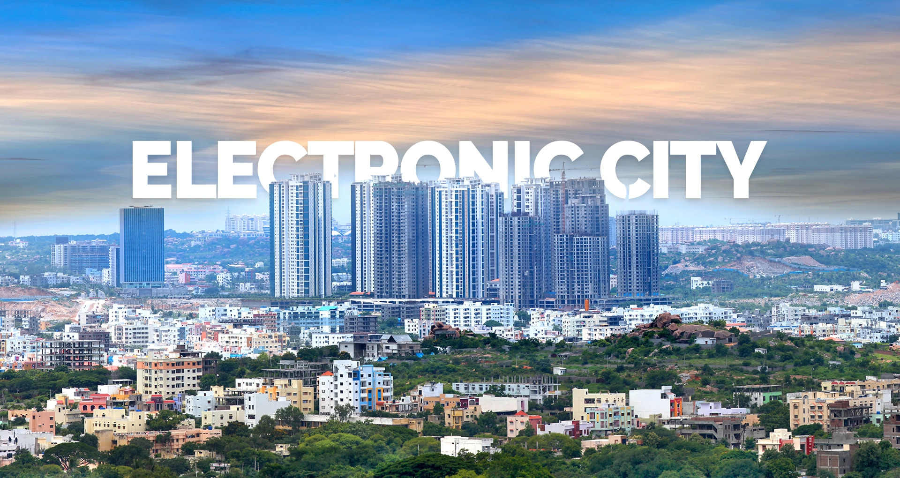

Electronic City

- Electronic City, located in the southern part of Bangalore, Karnataka, is one of India's largest information technology (IT) hubs. Established in the late 1970s by the Industrial Areas Development Board (KIADB), it spans over 800 acres and is divided into three phases.
- Renowned for its well-planned infrastructure, Electronic City boasts wide roads, green spaces, and dedicated IT parks. Economically significant, it houses multinational IT giants like Infosys, Wipro, TCS, HCL Technologies, Tech Mahindra, and Biocon, contributing significantly to Bangalore's economy and India's IT sector.
- The area serves as a major employment hub, attracting skilled IT professionals from across India and abroad, and has witnessed substantial residential development to accommodate the growing workforce.
- Connectivity is robust, facilitated by arterial roads, the Bangalore Metro, elevated expressways, and NICE Road, providing easy access to the city center and other parts of Bangalore.
- Moreover, Electronic City offers a wide array of amenities including shopping malls, restaurants, hospitals, schools, and recreational facilities, enhancing the quality of life for residents and employees. Overall, Electronic City plays a pivotal role in solidifying Bangalore's reputation as the "Silicon Valley of India" and driving the growth and development of the IT industry in the country.
Click image to view Electronic City in map